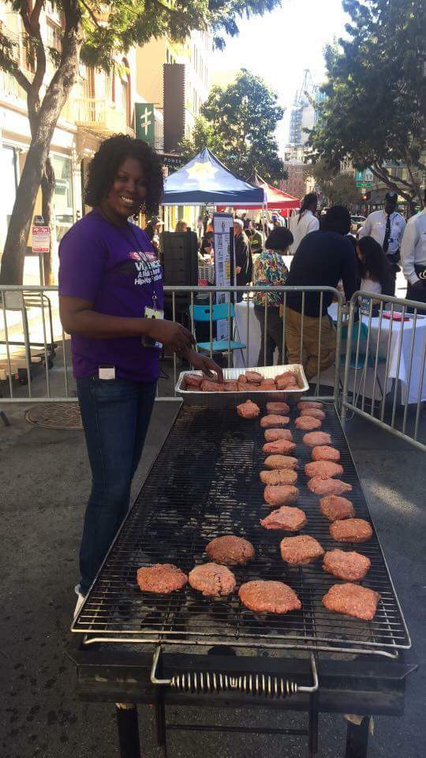
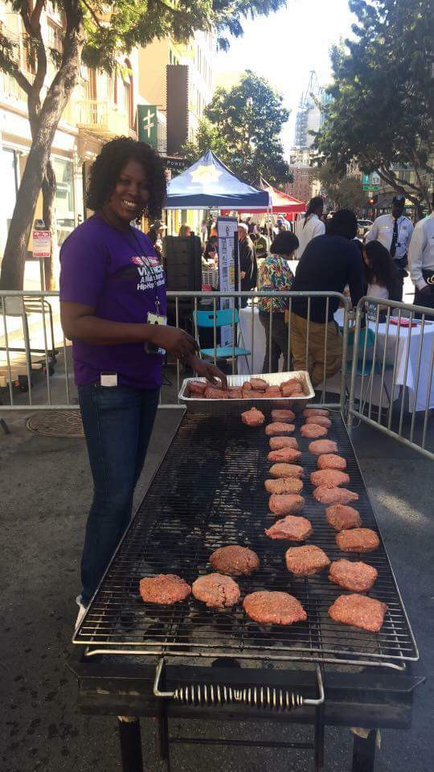
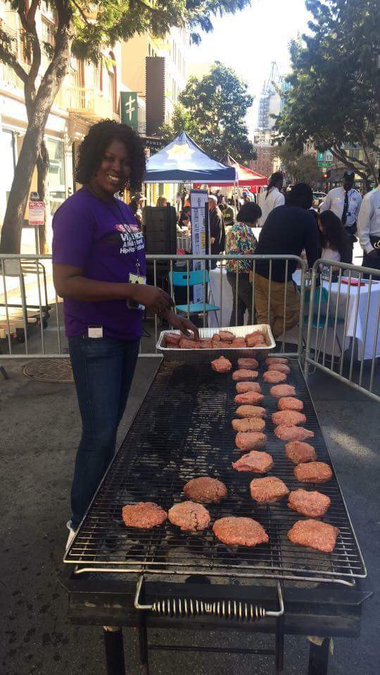

The Tenderloin Stop the Violence Movement is led by a coalition of young people in our community. After losing our closest friend in April 2017 to unnecessary violence, we gathered in our grief and decided to make immediate change. Our interest in change led to the production of the “T.L. Stop the Violence Event” to build relationships with law enforcement, and create mentorship, employment, housing and mental health services. Many young people in the T.L. connect through hip hop, bringing the different nationalities together through music. We believe saving lives through multicultural hip hop connections is our future.
Stop the Violence Tenderlion
History
The history of the Tenderloin has been rich with music, theater, arts and culture since the 1940s. In July 2008,the area was designated as a historic district on the National Register of Historic Places. Over time, social issues and crime has also been present. According to a January 6th, 2014 Chronicle article, the Tenderloin is seeing its highest rates of crime and violence. Over the years there has been an uprising in violence. In 2017 up to present day the violence is out of control. The Stop the Violence event helped us to begin the process of getting back to our roots through music, arts and culture.
Multicultural Hip Hop Festival

Videos on planning and organization for Stop the Violence
Displacement
The Tenderloin is considered an undesirable place to live, which has driven down the costs of rent. Immigrants and poor communities from all over San Francisco transcended into the Tenderloin for low cost living in SRO’s, subsidized housing and weekly hotel rentals. Homelessness due to the rapid gentrification in San Francisco has hit the Fillmore, Bayview/Hunter’s Point, Mission, Visitation Valley and Lake View the hardest. These neighborhoods were known as low income communities and suffer from the plague of violence, drugs and mental health issues. Generations of residents from San Francisco are being displaced and impacts their children, economic welfare, social status and health.


 
